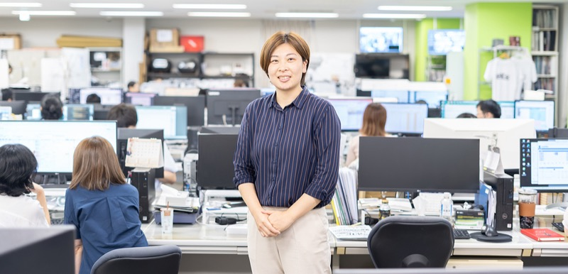

INTERVIEW 04
次世代モビリティの開拓を進め、会社の成長に貢献したい
01幅広い業務を担うが、その分大きなやりがいを感じる
学生時代に中国語を学んでいたことや前職で中国出張の機会があり、現地で仕入れや調達に携わった経験から、貿易や調達の仕事に興味を持つようになりました。面接では代表をはじめ人柄の良い方が多く、当社でなら安心して挑戦できると感じ、入社を決めました。現在は商品開発・企画部門として、既存商品の安定供給や品質改善に加え、新商品の企画・開発も担当。電動キックボードや電動アシスト自転車といった次世代モビリティ分野のチームリーダーとして、中国で行われる展示会での市場調査や工場での品質確認、日本市場に合わせた仕様検討から販売戦略の立案まで一連の業務を進めています。倉庫や営業、マーケティングなど社内の各部門とも連携する必要があるため、業務範囲は幅広いですが、その分大きなやりがいを感じています。
02感情的にならず、冷静に粘り強く信頼関係を築いていく
この仕事の特徴は、海外メーカーとのやり取りが欠かせないこと。品質不良が発生した際には責任の所在をめぐって意見が食い違い、交渉が難航することもあり、日本の常識が通じない場面も少なくありません。そうした状況でも私は感情的にならず、冷静に対応することを心がけ、粘り強くやり取りを続けています。相手に不信感を与えず、落ち着いて話し合うことが、結果として良い関係づくりにつながると実感しています。こうした経験から、この仕事に向いているのは、トラブルや失敗があっても前向きに切り替えられる人だと思います。さらに海外の文化や価値観を柔軟に受け入れる姿勢も欠かせません。難しいことはありますが、課題に向き合う中で経験を着実に積める環境です。
03製品の成功と人の成長、その両方を支える責任とやりがい
この仕事でやりがいを感じる瞬間は、交渉が実を結び商品が市場で売れていくときです。数千万円規模の仕入れが形となり、街中で自分が携わった製品を見かけると大きな達成感があります。最近ではチームリーダーとして後輩の育成にも力を入れており、担当ブランドのKPI達成に向けた施策を考えてもらい、その内容を確認しながら伴走する機会が増えました。自分の説明がきちんと伝わり、理解してもらえたと感じられるときには、確かな手応えを感じます。今後はチーム体制をさらに整え、新人が自律的に業務を回せるようサポートしていきたいと考えています。そのうえで、次世代モビリティや高付加価値商品の開拓を進め、当社の成長に貢献できるよう自分もさらなる成長を目指していきたいです。
1日のスケジュール
- 出社・社内連絡ツール（チャットワーク）確認、メール確認、メーカー連絡ツール（wechat他）確認、電動キックボードや電動アシスト自転車等問い合わせ確認
- 9時台の続きや実績確認・売上数値分析、書類更新
- 売上を上げるための施策案出し、施策準備
- 施策案出し、施策準備
- 昼休み
- 定例会議、スポット会議（日によっては会議が3-4時間入っている場合もあります）
- 電動アシスト自転車等のSNS配信内容案出し、準備他
- 同上、施策関連、管理表更新
- 品管関連、その他イレギュラー業務、部内フォロー
- チャットワーク、メール確認、イレギュラー業務により押したスケジュールの対応・退社